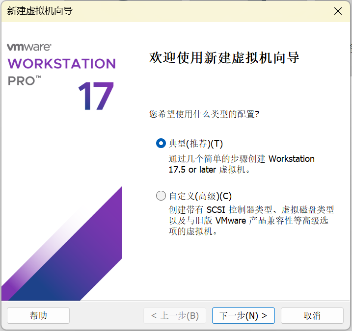

在虚拟机下安装Linux系统
Note
本部分属于初学者指南。我们不限制环境的使用。你可以使用机房环境、双系统或其他linux发行版完成
本课程推荐使用机房环境、VMware虚拟机来完成实验
1.0 若干名词解释¶
宿主机(host)：主机，即物理机器。
虚拟机：在主机操作系统上运行的一个“子机器”。
Linux发行版：Linux内核与应用软件打包构成的可以使用的操作系统套装。常见的有Ubuntu、Arch、CentOS甚至Android等。
1.1 下载¶
虚拟机软件：
- VMware Workstation Pro的下载链接（请参考1.2的步骤下载）：https://support.broadcom.com/group/ecx/productdownloads?subfamily=VMware%20Workstation%20Pro&freeDownloads=true
- macOS宿主机若想使用其他虚拟机软件，请自行搜索安装教程。
Ubuntu 24.04.4 LTS 安装镜像文件（下载完成之后，你不需要打开镜像文件）：
- 官网链接：https://releases.ubuntu.com/24.04/ubuntu-24.04.4-desktop-amd64.iso
- 清华镜像：https://mirrors.tuna.tsinghua.edu.cn/ubuntu-releases/24.04/ubuntu-24.04.4-desktop-amd64.iso
1.2 VMware Workstation Pro下载¶
-
访问BROADCOM官网，在右上角注册账号并登录。
-
访问https://support.broadcom.com/group/ecx/productdownloads?subfamily=VMware%20Workstation%20Pro&freeDownloads=true，你会看到25H2和17.0两种类型的VMware Workstation Pro，前者VMware 25H2无默认中文环境(可自行搜索配置中文环境教程)，后者VMware 17.0有默认中文环境，展开
VMware Workstation Pro 25H2 for Windows或VMware Workstation Pro 17.0 for Windows，点击最新版本。 -
勾选
I agree to the Terms and Conditions，点击下载图标下载(图中是17.6.3版本，建议选择17.6.4版本或25H2u1版本)。 -
正常应该是直接开始下载，如果弹出如下界面，补全相关信息，点击提交，再按照第三步操作一遍即可。
{kind=link}
{kind=link}
{kind=link}
{kind=link}
安装VMware的步骤较为简单，运行安装程序即可，在此不表。
1.3 创建、安装虚拟机 (VMware)¶
1.3.1 新建虚拟机¶
左上角菜单栏单击文件，点击新建虚拟机。
{kind=link}
在打开的窗口选择 典型（推荐），点击下一步 。
{kind=link}
选择稍后安装操作系统，点击下一步。
请不要在这里选择安装程序光盘镜像文件，我们会在稍后再选择。
此处选择会触发自动安装，后续实验可能会出现问题。
{kind=link}
客户机操作系统选择Linux，版本选择Ubuntu 64 位。
{kind=link}
1.3.2 设置虚拟机名称和文件存放位置¶
设置虚拟机名称和文件存放位置。
考虑到虚拟磁盘大小可能需要50GB以上，建议将其放在空间有富余的磁盘分区上。
1.3.3 设置虚拟硬盘¶
最大磁盘大小：建议40G~50G。你可以随意选择是否拆分磁盘的选项。如果你有很多不常用的文件占用大量磁盘空间，可以考虑将其转移到睿客云盘上保存。（注意：虚拟机硬盘空间并不是预先全部分配，而是分配实际使用到的部分，所以设置略大不影响实际磁盘使用）
警告：如果磁盘空间不够，Linux启动会黑屏进不去图形界面，需要在命令模式下删除一些文件后重启才能进入图形界面。一些虚拟机具备“扩展磁盘容量”的功能，但是根据实际测试，发现很多时候反而会让虚拟机直接黑屏。
{kind=link}
1.3.4 硬件配置¶
可以在自定义硬件内自己设置内存、处理器核数等设置。完成设置以后点击完成。
请至少分配2GB以上的内存给虚拟机。同时建议分配至少¼主机内存给虚拟机。
为虚拟机分配更多的CPU内核数量有助于提高虚拟机的性能。注意，给虚拟机分配的内核不是被虚拟机独占的。就算为虚拟机分配宿主机相同的内核数量，也毫无问题。
{kind=link}
1.3.5 选择操作系统镜像¶
右键点击左侧侧边栏中我们创建的虚拟机，然后点击设置。
{kind=link}
在设置界面，点击CD/DVD(SATA)，在右侧，选择使用ISO映像文件，点击浏览，选择我们之前下载的Ubuntu 24.04.2的镜像文件，点击确定保存设置。
{kind=link}
在我们创建的虚拟机的选项卡中，点击开启此虚拟机，启动虚拟机，准备安装Ubuntu。
{kind=link}
1.3.6 安装Ubuntu¶
如果在安装时发现“继续”、“后退”、“退出”等按钮在屏幕外，请先按
Alt+F7，然后松开键盘，再移动鼠标以拖动窗口。点击鼠标会使窗口拖动停止。
安装的大部分步骤只要默认下一步即可，我们只对关键步骤进行提示。
虚拟机启动以后会弹出如下界面，选择Try or Install Ubuntu，按回车键选择。
{kind=link}
接下来将进入Ubuntu安装程序，选择语言为中文（简体）：
{kind=link}
键盘布局选择汉语：
{kind=link}
在更新可用界面，不建议选现在更新。因为国内默认的下载源速度较慢，换源之后速度才快。此处点击跳过，稍后我们进入系统换源以后再更新。
{kind=link}
安装类型界面，因为虚拟机的磁盘本来就是空的，所以安装类型选择擦除磁盘并安装Ubuntu。
警告：在安装双系统时，不要选这个，否则后果自负。
{kind=link}
设置账户界面，随便编一个姓名、计算机名、用户名，然后设置密码。
警告：请一定要记住密码。否则会进不去系统。
{kind=link}
时去选择界面，时区位置默认上海即可。
{kind=link}
最后等待安装完成即可，安装完成之后系统会提示重启，按照提示重启即可。
{kind=link}
重启可能会遇到如下情况，提示需要移除安装光盘。
{kind=link}
按照1.3.5章节，打开虚拟机设置界面，将启动时连接取消勾选，再点击确定保存。然后回到虚拟机界面，点击回车键，即可正常进入系统。
{kind=link}
1.4 其他必要设置¶
1.4.1 换源¶
Ubuntu自带的软件源较慢，这会导致我们安装软件包时花更多的时间下载。所以要更换软件源为科大镜像。进入虚拟机后，点击左下角的进入应用菜单，找到并进入“软件更新器”。进入之后它会检查更新，最后会跳出一个“是否向安装更新”的提示。不要安装，并点击“设置”。
{kind=link}
更改“Ubuntu”软件选项卡的“下载自”为“其他站点”，在弹出的“选择下载服务器”窗口中选择“中国-mirrors.ustc.edu.cn”。输入密码即可完成修改。

设置之后，如果提示更新软件包缓存，请选择更新，并等待更新结束再安装其他软件包/语言包。如果提示更新系统，也可以放心地选择更新而不必担心用时过长。
1.4.2 设置文件拖放¶
VMware默认可以进行主机与虚拟机之间的文件拖放，因为VMware会自动安装VMware tools，但是如果发现调整不了虚拟机分辨率、无法共享粘贴板等情况，是自动安装失败（比如网络问题），需要手动安装。请参考此链接：https://blog.csdn.net/williamcsj/article/details/121019391或者官方文档：https://techdocs.broadcom.com/cn/zh-cn/vmware-cis/vsphere/tools/12-1-0/vmware-tools-administration-12-1-0/installing-vmware-tools/manually-install-vmware-tools-on-windows.html
VMware的文件拖放经常会出问题，目前并没有通用的解决方案，因此建议用U盘、共享文件夹、睿客云盘之类实现文件中转。
1.4.3 修改语言¶
如果按照本文档进行手动安装，一般无需修改。如果你采用了自动安装或者有一些意外情况，请参考此链接：https://blog.csdn.net/ibiao/article/details/127715465
1.4.4 如何关机¶
如何关闭Ubuntu：如下图所示，点屏幕右上角-关机。
{kind=link}
直接点虚拟机右上角的叉也可以关机。